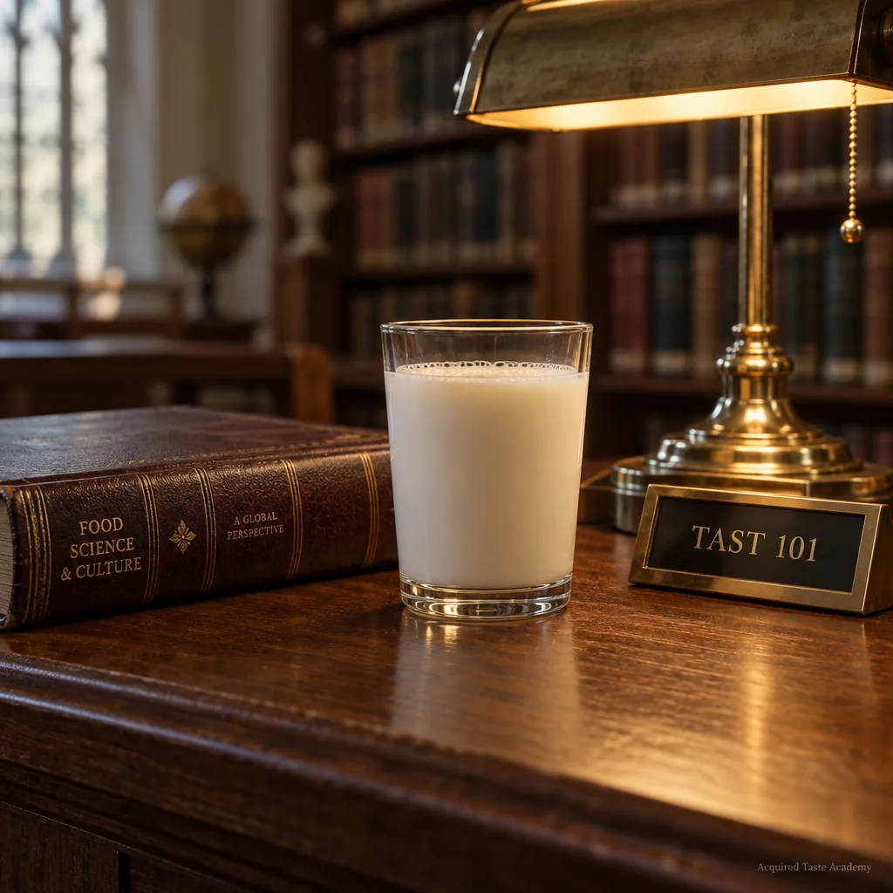
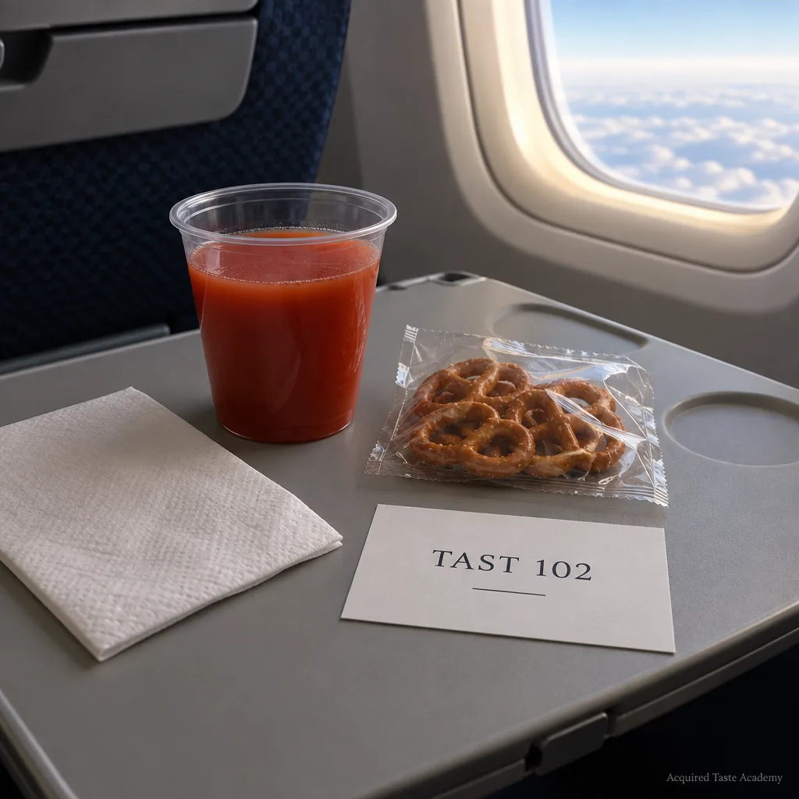
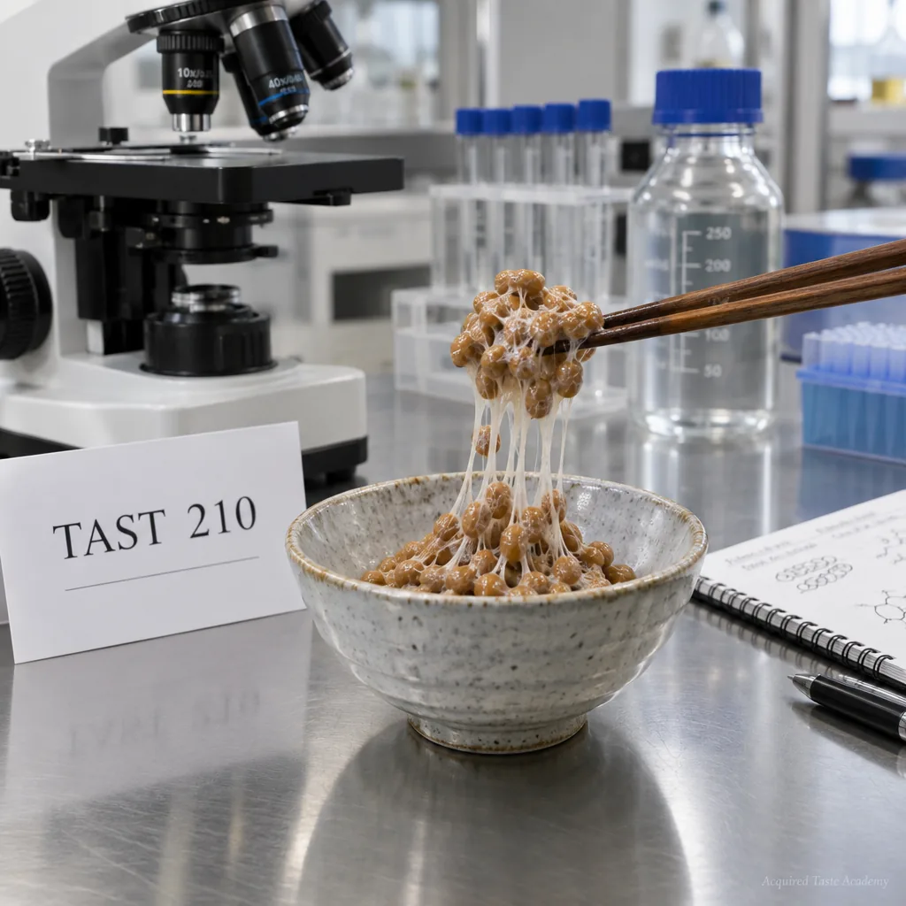
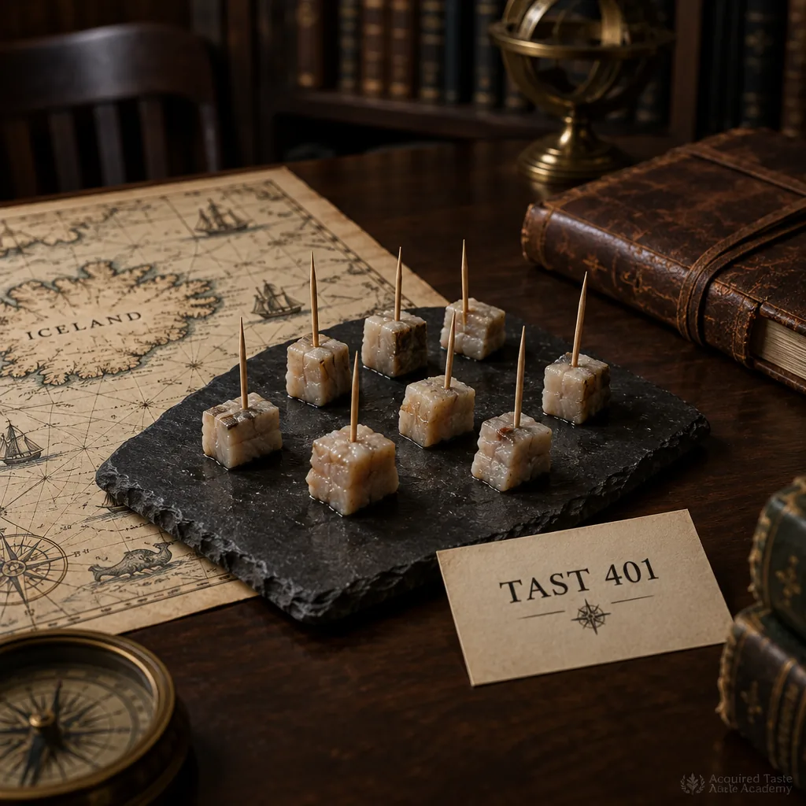
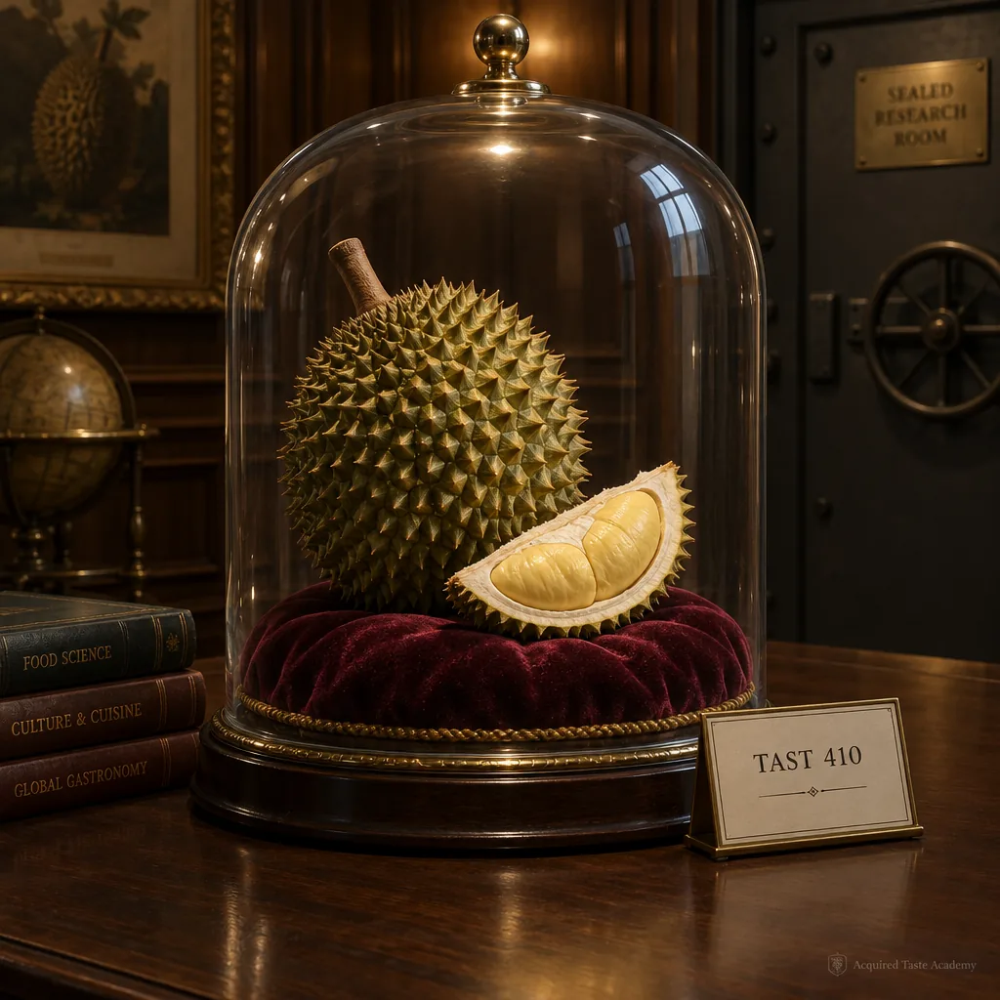
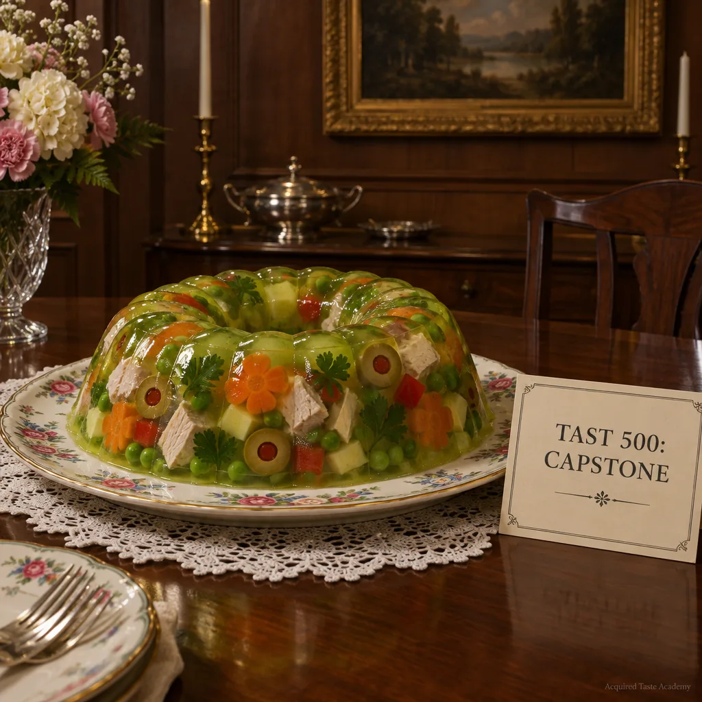

1.Featured coursework, with plates

TAST 101 · 3 credits
Foundations of the Difficult Palate
The survey course. Weeks one through three: warm milk, at descending temperatures of enthusiasm. Weeks four through seven: the room-temperature buffet. Learning outcome: by week four, the student will no longer flinch. Prerequisite: none. Corequisite: a private place to practice.

TAST 102 · 3 credits
Airplane Tomato Juice: Terroir at Altitude
Why does tomato juice taste correct only above thirty thousand feet? The course examines cabin pressure, umami perception, and the small courage of ordering it anyway. The final examination is administered on a chartered regional flight during light turbulence.

TAST 210 · 4 credits
Introduction to Fermentation: Natto and Friends
The intermediate gateway. Students study natto in the laboratory before meeting it socially. Instruction covers string management, breathing techniques, and the correct answer to "are you really going to eat that," which is yes, calmly, while maintaining eye contact.

TAST 401 · 4 credits
Graduate Seminar: Hákarl and the Literature of Regret
Iceland's fermented shark, read alongside primary sources from visitors who described it in strong terms. Seminar discussion addresses ammonia as a flavor note, national pride as a preservative, and why the smallest cube is not the easiest cube. Conducted in the sealed room.

TAST 410 · 4 credits
Graduate Seminar: Durian Appreciation
The king of fruits, approached with the caution owed to royalty. Units on aroma theory, hotel policy, and the moment the custard texture stops being a problem and starts being the point. The seminar room's ventilation system was donated by an alumnus who asked that we not name him near it.

TAST 500 · 6 credits
Capstone: Casseroles of the 1950s
The terminal course. Students confront the mid-century canon: aspics with suspended vegetables, tuna in unexpected settings, and the lime gelatin ring that has ended promising careers. The capstone concludes with a public defense, at a potluck, before a committee that brought nothing.
2.Complete course listing
Courses below are offered in rotation. Descriptions are available from the registrar, who summarizes them accurately and with no enthusiasm.
| No. | Title | Prereq. | Cr. |
|---|---|---|---|
| TAST 090 | Remedial Seminar: Toast, Lightly Buttered | None | 0 |
| TAST 101 | Foundations of the Difficult Palate | None | 3 |
| TAST 102 | Airplane Tomato Juice: Terroir at Altitude | 101 | 3 |
| TAST 115 | Black Licorice: A Defense | None | 2 |
| TAST 140 | The Lukewarm: Soups, Coffees, Receptions | 101 | 2 |
| TAST 210 | Introduction to Fermentation: Natto and Friends | 101 | 4 |
| TAST 215 | Brine Studies | 101 | 3 |
| TAST 230 | Textures I: The Slippery | 210 | 3 |
| TAST 231 | Textures II: The Gelatinous | 230 | 3 |
| TAST 260 | Field Methods: Gas Station Sushi | 215 | 3 |
| TAST 305 | Durian in Translation (taught remotely, by request of the building) | 210 | 3 |
| TAST 320 | Surströmming: Opening Procedures | 215, outdoors | 4 |
| TAST 401 | Graduate Seminar: Hákarl and the Literature of Regret | 210, consent | 4 |
| TAST 410 | Graduate Seminar: Durian Appreciation | 210 | 4 |
| TAST 420 | Casu Martzu: a Discussion We Keep Having | 401, waiver | 4 |
| TAST 455 | Independent Study: Whatever Is in Grandpa's Cellar | Faculty consent | 1–4 |
| TAST 500 | Capstone: Casseroles of the 1950s | 24 cr., one 400-level | 6 |
3.Enrollment
Registration for all courses is handled through admissions, beginning with the placement examination. Auditors are welcome in lecture courses and forbidden from the sealed room, for their own good and the record's.